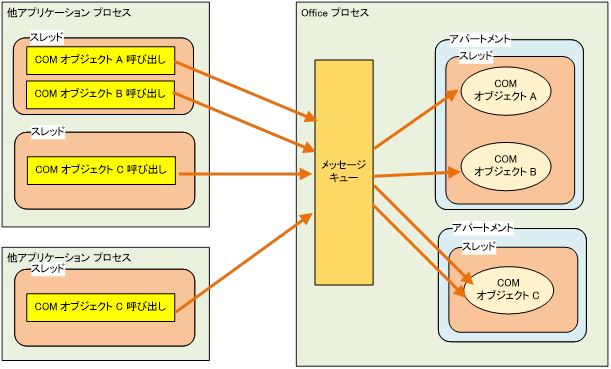

(※ 2017 年 1 月 30 日に Japan Office Developer Support Blog に公開した情報のアーカイブです。)
こんにちは、Office 開発 サポート チームの中村です。
今回は、Office をオートメーションするアプリケーションをマルチスレッドで作成する際の注意点について記載します。
Office は STA (Single-Threaded Apartment) モデルで動作しているため、マルチスレッドからの呼び出し、特に Office に重い処理を実行させているときや、ループ処理などでマルチスレッドから大量の呼び出しを行うと、エラーが発生することがあります。
この動作については、以下の弊社公開資料で解説していますが、開発者の皆様に知って頂く機会を増やすとともに、図等を用いてより親しみやすい内容でご案内するため、今回、本記事でも取り上げたいと思います。
タイトル : Office でのスレッドのサポート
アドレス : https://msdn.microsoft.com/ja-jp/library/8sesy69e.aspx
目次
1. STA とは？
2. マルチスレッドからの呼び出しで想定されるエラー
3. 対処方法
1. STA とは？
プロセスのスレッド モデルには、大きく分けて STA と MTA (Multi-Threaded Apartment) モデルがありますが、Office は STA を採用しています。(主に GUI でユーザー操作を行うアプリケーションでは、処理の整合性を確保するための実装が MTA と比較して容易なため、STA が採用されることが多いと思います。)
STA モデルである Office では、他プロセスからの COM オブジェクト呼び出しは、全て一元的にウィンドウ メッセージとしてキューイングされます。Office プロセス内部では、ウィンドウ メッセージ キューから COM 呼び出し要求が取り出され、適切なスレッドで COM オブジェクトの処理が実行されます。

図 1. STA の仕組み
例え話を用いてもう少し噛み砕いて説明すると、プロセス ＝ マンション、スレッド = マンション内の各部屋、とイメージすると分かりやすいかと思います。
STA モデルのアプリケーションは、管理人がいるオートロック マンションのようなものです。他プロセス (=マンションの訪問者) は、各部屋の住人に用事 (=COM オブジェクトの呼び出し) がありマンションを訪れると、まずは管理人に用件を伝えます。各部屋の住人 (= COM オブジェクト) への取次は、すべてこの管理人を通して行われます。訪問者が直接部屋を訪問することはできません。
また、ここからが本記事で説明したいポイントですが、管理人は 1 人しかいないので、各部屋の住人に順次訪問者の用件を取り次いでいきます。このため、訪問者が多いとすぐに用件を受け付けてもらえなかったり、後で出直してきてね、と言われることもあるのです。このような状況が、次の項目で記載するエラー発生時には起きています。
参考資料)
STAの詳細については以下の公開資料をご参照ください。
タイトル : [OLE] OLE スレッド モデルの概要としくみ
アドレス : https://support.microsoft.com/ja-jp/kb/150777
2. マルチスレッドからの呼び出しで想定されるエラー
STA モデルをサポートする Office に対して、マルチスレッドから同時に COM 呼び出しを行うと、例えば 0x8001010A や 0x80010001 といった COMException が発生することがあります (これらのエラーコード自体は汎用的なものですので、他の原因で生じることもあります)。
マルチスレッドからの呼び出しで COMException に陥るシナリオとして、例えば以下のようなケースが考えられます。
- Office でモーダル ダイアログが表示されており、他の要求が受け付けられない状態である
- 先行処理に時間がかかっていたり、マルチスレッドからループなどで大量の処理要求が行われたことで、Office がビジー状態である
1. の図で示す通り、Office プロセスは COM 呼び出しをキューイングしますので、Office の処理中に COM 呼び出しを行うと、直ちに COMException が生じるとは限りません。(Office の状態によっては、即座に COMException が生じることもあります。) ただし、Office 内部スレッドとの連携に使用するウィンドウ メッセージ キューの許容量 (既定で最大 10,000 個) を超えた場合などには、COM 呼び出し要求が受け付けられず、COMException に陥ることになります。
1. でのマンションの例で言えば、管理人が優先度の高い訪問者の対応をしていたり、対応待ちの列が長すぎたりすると、新たな訪問者は追い返されてしまうこともあるわけです。
3. 対処方法
この動作によって生じる COMException について、検討できる対処方法はそれほど多くはありません。
対処方法の 1 つは、COM 呼び出しを行うアプリケーションで、マルチスレッドから Office の COM 呼び出しを行わないよう変更することです。アプリケーション自体がマルチ スレッドであることは問題ありませんが、Office への COM 呼び出しはバック グラウンドで行わず、特定のスレッドでシーケンシャルに行います。
もう 1 つは、COMExceptionが発生したら、時間を空けてリトライするような処理を実装することです。
ただし、以前の投稿で Office は 1 プロセスで複数のファイルが開かれるとご案内しているとおり、プログラムからの処理中にユーザー操作などで他の処理要求が行われることを完全に防ぐことはできません。ユーザー操作によって Office アプリケーションがビジー状態となっているところにアプリケーションから COM 呼び出しが行われても、同様に受け付けられません。また、モーダル ダイアログの例であれば、いつ閉じられるかはユーザー次第なのでどれくらいリトライすべきかの判断も難しいところです。
この記事でお伝えしたいのは、まずは自身のプログラムからの処理だけを見たときに問題が生じないよう、STA の処理の仕組みについて考慮頂きたいということです。その上で、実際の運用上、ユーザー操作や他のプログラムとの関係でどうしても発生してしまうエラーについては、運用対処やメッセージ ダイアログでユーザーに注意を促すなどの対応をご検討ください。
参考資料)
本記事でご紹介した Office は STA モデルであるということは、Office でサーバーサイド オートメーションがサポートされない理由の 1 つでもあります。以下の資料にも記載がございますので、参考までにご案内します。
タイトル : Office のサーバーサイド オートメーションについて
アドレス : https://support.microsoft.com/ja-jp/kb/257757
該当箇所 : 再入可能性とスケーラビリティ
今回の投稿は以上です。
本情報の内容 (添付文書、リンク先などを含む) は、作成日時点でのものであり、予告なく変更される場合があります。